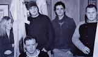

Celtic Lyrics Corner > Artists & Groups > Gráda
|  | Gráda |
| Members : | Alan Doherty, Colin Farrell, Nicola Joyce, Andrew Laking & Gerry Paul |
| Albums : |
2004 -
Endeavour
2004 - The Landing Step 2007 - Cloudy Day Navigation |